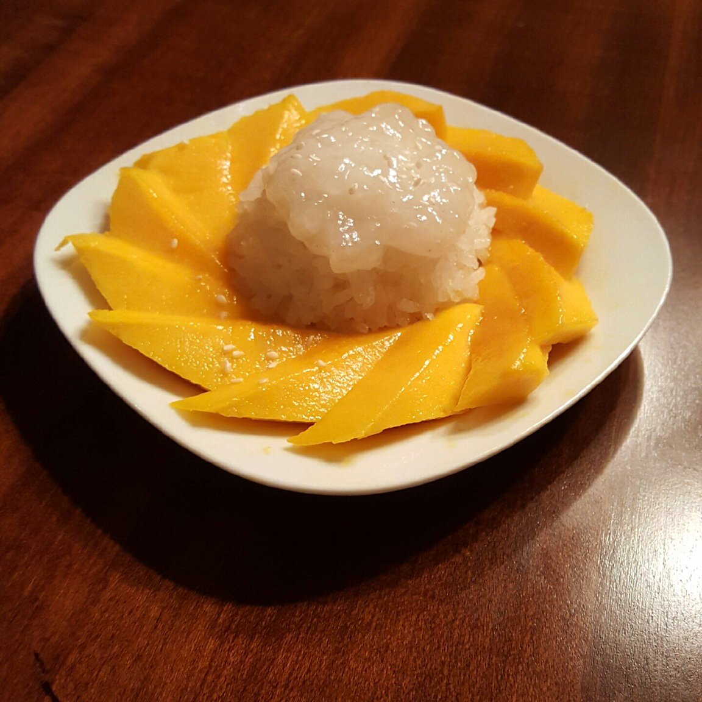

Thai Sweet Sticky Rice with Mango

Description
This is a popular Thai dessert that is sweet and offers many different textures. The mango also makes it seem as if the dessert is kind of healthy *wink *wink
Ingredients
- 2 cups water
- 1 1/2 cups uncooked short grain white rice
- 1 1/2 cups coconut milk, divided
- 1 cup white sugar
- 3/4 teaspoon salt, divided
- 1 tablespoon white sugar
- 1 tablespoon tapioca starch
- 3 mangoes, peeled and sliced
- 1 tablespoon toasted sesame seeds
Steps
- Combine water and rice in a saucepan. Bring to a boil, cover, and reduce heat to low. Simmer until water is absorbed, 15 to 20 minutes.
- While the rice cooks, combine 1 1/2 cups coconut milk, 1 cup sugar, and 1/2 teaspoon salt in another saucepan. Bring to a boil over medium heat; remove from the heat and set aside.
- Stir cooked rice into coconut milk mixture. Cover and allow to cool for 1 hour.
- Make a sauce by combining 1/2 cup coconut milk, 1 tablespoon sugar, 1/4 teaspoon salt, and tapioca starch in another saucepan; bring to a boil.
- Place coconut rice on a serving dish and arrange mangos on top. Pour sauce over mangos and rice. Sprinkle with sesame seeds.